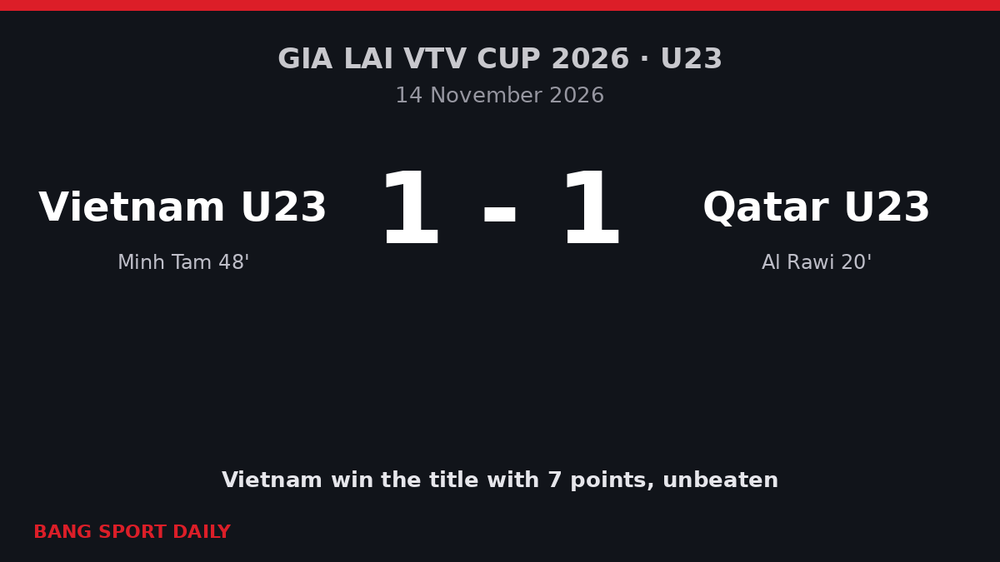
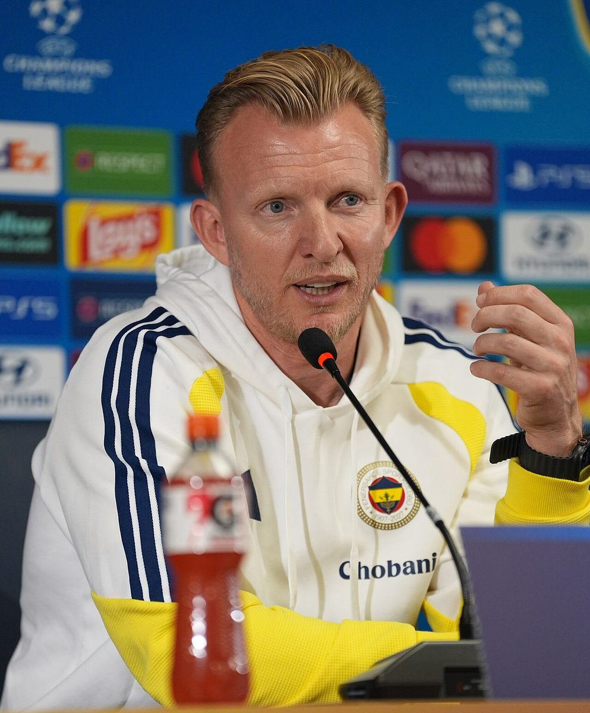

Football

Svay Rieng Stun Machida as Crown Fall in Kuching: ACL Two Matchday 5 Round-Up
Svay Rieng beat Japan's Machida Zelvia 2-0 in Phnom Penh, Phnom Penh Crown lost 3-0 in Malaysia, and both Cambodian clubs still lead their own fate into the final round

David Beckham Surprises 39 Youth Players at Singapore Football Clinic
The former England captain launched Community Chest's Sports for Good initiative alongside local internationals Hassan Sunny and Izairida Shakira.

Former Singapore Captain Rosnani Azman Retires from International Football
The 29-year-old defender steps aside after 58 caps, an overseas career in Japan and Australia, and over a decade of service to Singapore.

Bojan Hodak Appointed Malaysia Head Coach as Harimau Malaya Reorganise
The 55-year-old Croatian returns to Malaysian football as Tan Cheng Hoe transitions into the national team director role.

China U17 Earn First World Cup Point in 21 Years After 2-2 Morocco Draw
Striker Zhao Songyuan scored twice in Doha before a 99th-minute equalizer denied Satoshi Ukishima's side victory.

Vietnam Earn Historic First U17 World Cup Point in 3-3 Thriller Against New Zealand
Cristiano Roland's squad fought back three times before Trương Nguyễn Duy Khang headed a 92nd-minute equalizer in Doha.

Svay Rieng and Phnom Penh Crown chase a historic AFC Champions League Two double
Svay Rieng arrive top of the Cambodian Premier League after a 5-0 win, while group leaders Crown carry poor league form into a decisive trip to Kuching

Bangladesh and Singapore finalize preparations ahead of December women's friendlies
Interim coach Eric Mare leads Dhaka camp while Lionesses name Umairah Hamdan captain for two-match series

Vietnam Push Belgium to the Brink in Spirited 3-2 U-17 World Cup Debut
Wonder goals from Le Sy Bach and Chu Ngoc Nguyen Luc cannot prevent a narrow opening defeat to the European runners-up in Doha

Svay Rieng Sweep Past Port FC 4-1 to Revive ASEAN Club Championship Hopes
Goals from Min Ratanak, Martins Júnior, Tiago Alves and Kwame Peprah seal a commanding Group B win in Phnom Penh

Emma Hayes Names 23-Player USWNT Squad for World Cup Qualifying Campaign
A quarter-final victory over El Salvador on 27 November would seal the United States a berth at the 2027 Women's World Cup in Brazil.

Paraguay Spoil Moriyasu's Farewell as Japan Lose 2-1 in Singapore
Juan José Cáceres and Gustavo Gómez scored for Paraguay at the National Stadium, and Shio Fukuda's late header was not enough in Hajime Moriyasu's 113th and last match in charge of Japan.

Vinícius Scores a 12-Minute Hat-Trick as Brazil Beat Singapore 7-0
Vinícius Júnior scored in the 9th, 15th and 21st minutes for his first international hat-trick, and Endrick, Estêvão and Rayan added goals at the National Stadium.

Cambodian Premier League: Better Clubs, Small Crowds. A Club-by-Club Look at How to Build Fans
Cambodian clubs are winning in Asia, yet league matches average about 1,300 spectators. Data on all 11 clubs, Angkor Tiger's rise in Siem Reap, and lessons from Japan and Thailand point to what each club can do.

Liaoning Win First Chinese Women's Super League Title With a Round to Spare
A 1-1 draw at home to Beijing in Shenyang settled the title, a year after Liaoning lost it on the final day to the same opponents.

Ten-Man England Beat Spain 3-2 in Madrid to Top Their Nations League Group
Kane, Konsa and White scored before Elliot Anderson's red card, and England held on to end Spain's 43-match unbeaten run.

Japan Beat Brazil 3-2 in Singapore With a Stoppage-Time Winner
Tatsuhiro Sakamoto scored in the 91st minute after a Vinicius Junior double had brought Brazil level; Carlo Ancelotti and Raphinha were sent off.

Vietnam U23 Draw 1-1 With Qatar to Win the Gia Lai VTV Cup Unbeaten
Nguyen Minh Tam equalised just after half-time in Pleiku, giving the hosts the point they needed for the title.

India U17 Beat Guam 12-0 to Go Top of Their Asian Cup Qualifying Group
Captain Dallalmuon Gangte scored a first-half hat-trick in Kuala Lumpur; India now meet Palestine, who also have six points.

Manchester United Appoint Mauricio Pochettino After Sacking Michael Carrick
The former Tottenham and Chelsea manager signs until 2029 and starts on 18 November, after finishing his duties with the United States.

Substitute Bao Long Sends Vietnam U23 Past Singapore and to the Brink of the VTV Cup Title
Vietnam won 1-0 in Pleiku for a second straight win and need only a draw against Qatar on Saturday to lift the trophy.

Pio Esposito Double Helps Italy Beat France 3-1 and Hand Zidane His First Defeat
Italy came from behind at San Siro to go top of Nations League Group A1 on head-to-head, with one round of group matches left.

Crystal Palace Sack Pierre Sage After 16 Matches
The Premier League club sit bottom of the table and are in advanced talks with Thomas Frank.

Gangte Hat-Trick Gives India U17 a 4-2 Comeback Win Over Singapore in Asian Cup Qualifying
The captain scored three times in Kuala Lumpur as India came from behind to open their Group E campaign for the 2027 AFC U17 Asian Cup.

Aleksandr Golovin and Nail Umyarov Sidelined for Russia’s November Fixtures
Head coach Valery Karpin confirms injury concerns as the national team prepares for upcoming friendly matches in Tashkent.

Aoba Fujino Double Sparks Manchester City Comeback in Monza for First European Win
Andrée Jeglertz's side overturn an early deficit against Inter to secure a 4-1 victory in the Women's Champions League while resting key starters.

Manchester United Pursue Mauricio Pochettino as Michael Carrick Faces Dismissal
Club executives recommend a managerial change with United sitting 18th in the Premier League table.

Southeast Asian Football's Last Decade: What Drove the Risers, What Holds the Rest Back
Data on 11 national teams, seven leagues and their clubs shows why Thailand, Vietnam and Indonesia moved ahead, where Singapore and Malaysia stand, and the pain points every country, including Cambodia, must solve.

Brazil Arrive in Singapore to Face Japan and the Lions in Their Last Matches of 2026
Carlo Ancelotti's young squad plays two friendlies at the National Stadium in The Kallang Football Series, starting with a World Cup rematch against Japan on 14 November.

New Zealand Shut Out Samoa to Reach Women’s Rugby League World Cup Final
Stacey Waaka scores a hat-trick as the Kiwi Ferns claim a 32-0 semi-final win in Newcastle to book their place in the decider.

Four Goals in 17 Minutes: PSG Crush Villarreal 6-0 as the Champions League Favourites Pull Clear
Paris Saint-Germain and Real Madrid are the only teams with four wins from four. Arsenal, Como and Barcelona are the closest chasers.
Ma Xiaoxu Makes History Again: How China's U-17 Women Reached a First World Cup Quarter-Final
FIFA has praised the former Golden Ball winner after her first year as head coach, which included wins over the United States and France and an 87th-minute heartbreak against Brazil.

Kuyt's 'Miracle': Fenerbahçe Come From Behind Twice to Beat Liverpool 3-2
In only his second week as interim coach, the former Liverpool forward Dirk Kuyt watched Vedat Muriqi head the winner against his old club in Istanbul.

Lens 1-9 Como: Champions League Debutants Equal the Biggest Win in the Competition's History
In their first Champions League season, Como scored nine away from home, with a Tasos Douvikas hat-trick and two assists from Nico Paz, and moved up to fourth in the table.

Cambodia's Clubs Are Turning Heads in Asia: Phnom Penh Crown and Svay Rieng in the AFC Champions League Two
Four matchdays in, both Cambodian sides sit in qualifying places, with wins in Korea and Singapore and a draw against Shanghai Shenhua along the way.

Cristiano Ronaldo Retires from Portugal: The Long Walk in the Number 7 Shirt Reaches Its End
After 23 years, 146 goals, and a European crown, the 41-year-old steps away from international duty to close a transformative chapter.

Japan's Kozo Tashima to Challenge Gianni Infantino for FIFA Presidency
The former Japan Football Association president, now its honorary president, says he wants to bring Japanese football's 'sincerity, integrity and high ethical standards' to world football.